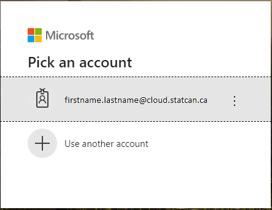

Logging in
Prerequisites
- An authorized StatCan Cloud account
- A registered DAaaS project
StatCan Cloud Account
We recommend you use Chromium or Edge to access the Azure Portal (i.e. firstname.lastname@cloud.statcan.ca)
-
Using Chrome, Chromium or Edge, open either:
- The Geospatil Platform Azure Portal Dashboard
-
You will then be prompted to either enter or pick an account:
-
Upon your first time signing in, you will receive the Microsoft Sign in prompt, as shown below.

-
Enter your cloud account credentials (firstname.lastname@cloud.statcan.ca), and click on Next.
-
On subsequent sign-ins, you will receive the Microsoft Pick an account prompt, as shown below. Click on your cloud.statcan.ca account.

-
-
You will then be prompted to enter your cloud account password, as shown below. Once entered, click on Sign in.

-
Lastly, you may receive the More Information required – Your organization needs more information to keep your account secure prompt from Statistics Canada, as shown below, especially if it’s the first time you log in to a Web portal with your cloud account.
Click on Next and ensure to follow the instructions to secure your account by configuring your authentication email and configuring your security questions.